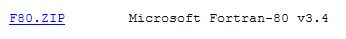
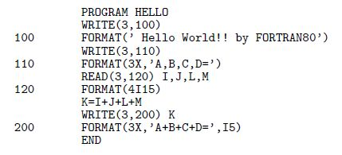
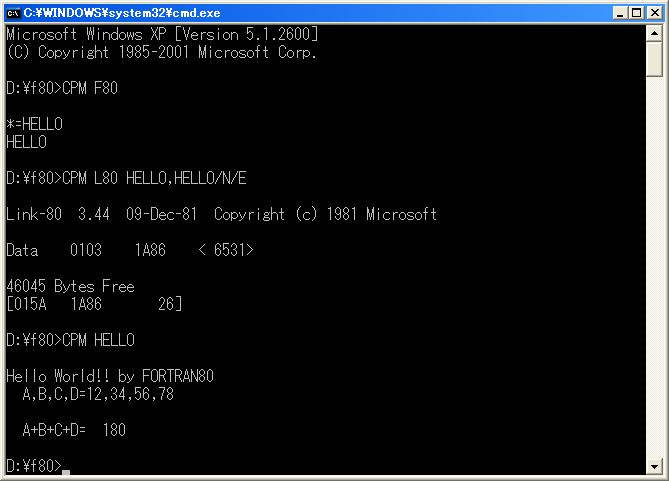
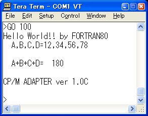
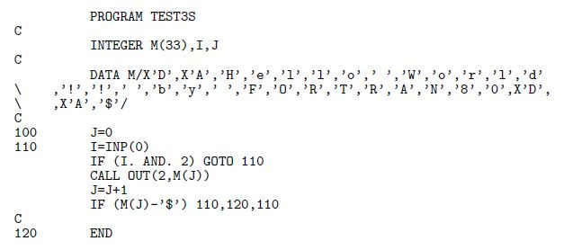
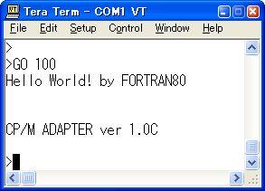
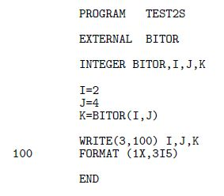
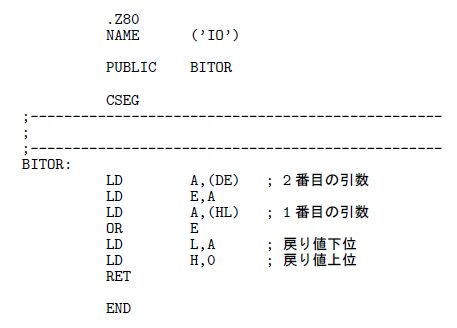
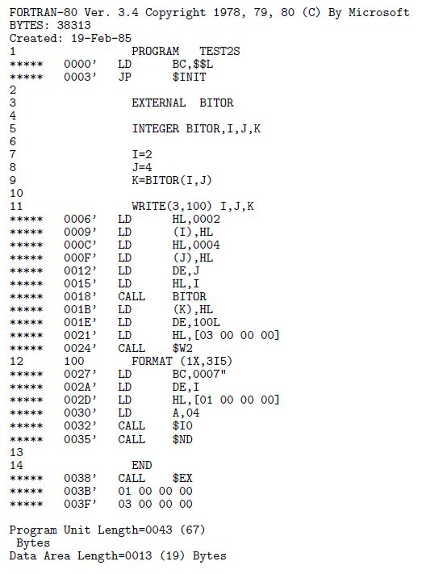
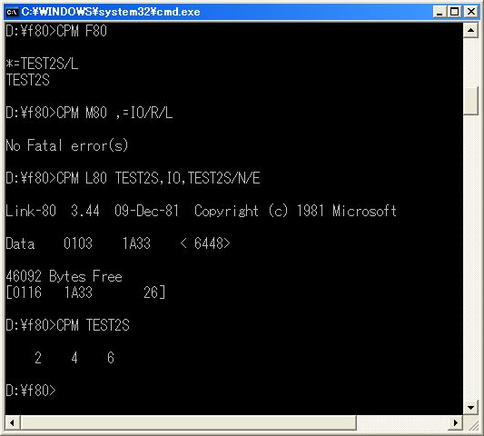

|
FORTRAN80 |
コンパイラとリンカで
COM
ファイルを作ります。
IO操作やメモリ操作の関数が追加されていますが
リンカが
L80
なので
M80
によってアセンブリ言語で作ったファイルと連結できます。
本コンパイラの準拠するFORTRANはまったく構造化されていない時期のものでBASICよりも
構造化されていませんが論理演算がビット単位なのでアセンブリ言語で書くようなプログ
ラムも可能です。
コンパイラのオプションでアセンブリ言語によるリストが得られるのでコンパイラ出力と
アセンブリ言語で書いたプログラムを連結する子細が分かります。
下から入手できるものはZ80のアセンブリ言語によるリストを出力します旧版は8080のア
センブリ言語を出力していました。
このツールの入手は http://www.retroarchive.org/ の下の所からできます。
|
 |
|
使い方 |
|
 |
|
 |
|
 |
|
IO直接操作 |
FORTRAN80の言語仕様は構造化プログラミングを取り入れる前のものなので書き方が堅苦しいですが アセンブリ言語だと思へば、ほぼ同じような感覚で書けます。 実際にアセンブリ言語との連結もせずにここまで書けました、他の言語 ではインラインアセンブラなどで補助が必要なものもあります。 また、下のプログラムの場合はコンパイラのライブラリをほとんど何も使っていないので 768 バイトなのですが普通のコンパイラではこの大きさで出力するものは珍しく組み込み用 途のコンパイラなみの大きさで出力していると思います。
|
 |
|
 |
|
アセンブリ言語との接続 |
FOTRAN言語の関数の形でアセンブリ言語に連結してみます。 まずFORTRANのプログラムの方を先に書いてコンパイルしてみます、 ファイル名を TEST2S .FOR とすると =TEST2S/L のコマンドでコンパイルリストが得られます。
|
 |
 |
アセンブリ言語で書くプログラムは
BITOR
で2個の引数の論理和を返す関数です、
FORTRAN80
では論理演算はビット単位で行うので必要のないものです。
下のリストの
CALL BITOR
の上を見ると引数の渡され方が下を見ると戻り値の受け取り方が分かりますので
これに合うように
BITOR
のアセンブリ言語のプログラム本体を書きます。
|
 |
下はコンパイルリストとアセンブルリストが得られるコマンド操作です。
|
 |
出来たプログラムを実行してみると 2 と 4 の論理和が 6 となっています。
引数と戻り値の受け渡しが合えばアセンブリ言語のプログラムは自由にかけますから プログラム全体の構造やアセンブリ言語で書きたくない計算などはFORTRANのほうで 書けばよいでしょう、アセンブリ言語のコンパイルリストが出力されるおかげで逆ア センブラやデバッガを使って解析する必要がないのは助かります。